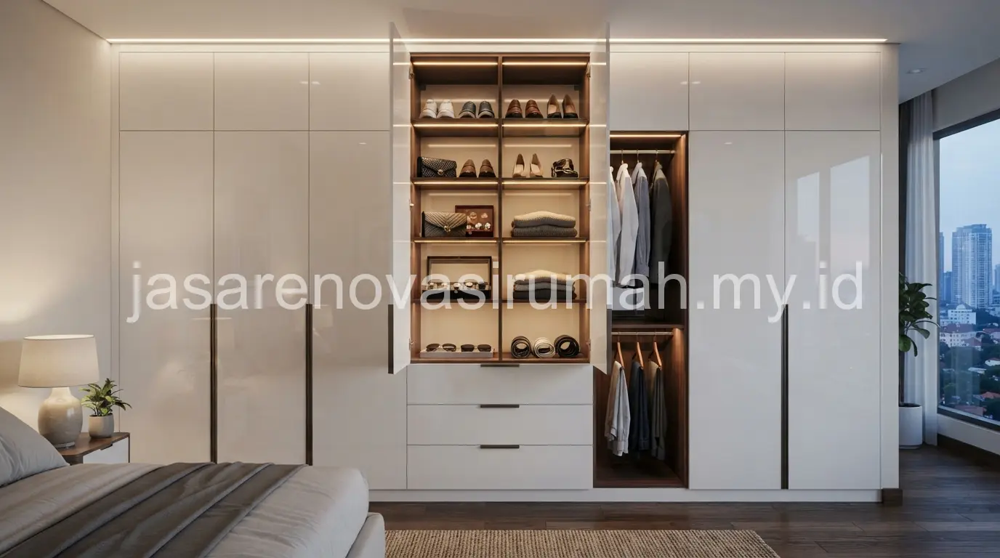
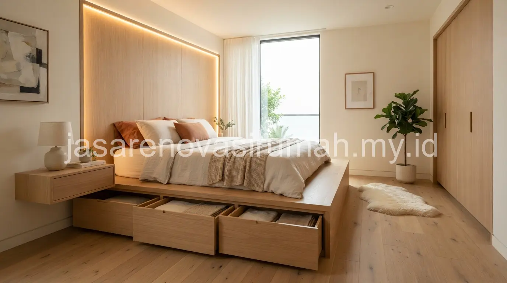

Jasa desain interior Jakarta Barat yang berpengalaman mampu menghadirkan furnitur custom seperti lemari wardrobe dan bed yang dirancang presisi sesuai ukuran ruangan, sehingga tidak ada ruang terbuang maupun celah yang mengganggu tampilan kamar.
Furnitur custom menjadi solusi tepat bagi pemilik hunian dengan ukuran kamar tidak standar, di mana furnitur siap pakai dari pasaran sering kali tidak pas dari sisi dimensi maupun fungsi penyimpanan yang dibutuhkan.
Mengapa Furnitur Custom Lebih Disarankan Dibanding Furnitur Siap Pakai untuk Ruangan Terbatas?
Furnitur custom dirancang sesuai ukuran ruangan sebenarnya, sehingga bisa memaksimalkan setiap sudut yang tersedia tanpa menyisakan celah kosong yang mengganggu tampilan maupun fungsi.
Beberapa keunggulan furnitur custom dibanding furnitur siap pakai:
- Ukuran presisi sesuai dimensi ruangan, termasuk sudut atau area tidak beraturan.
- Kapasitas penyimpanan bisa disesuaikan dengan kebutuhan spesifik penghuni.
- Material dan finishing bisa dipilih agar konsisten dengan tema interior ruangan lain.
- Tidak ada celah kosong antara furnitur dan dinding yang biasa terjadi pada furnitur pabrikan.
Kebutuhan furnitur presisi ini semakin relevan pada hunian dengan kamar tidur berukuran kecil, sejalan dengan prinsip efisiensi ruang yang juga dibahas pada desain interior kamar tidur minimalis sebelumnya.
Apa Saja Tahapan Pembuatan Wardrobe dan Bed Custom dari Awal hingga Selesai?
Tahapan pembuatan furnitur custom dimulai dari pengukuran lokasi, penentuan desain dan material, produksi di workshop, hingga instalasi langsung di rumah klien.
Berikut tahapan umum yang biasa dilalui:
- Survey dan pengukuran ruangan langsung di lokasi untuk memastikan dimensi yang akurat.
- Diskusi kebutuhan fungsi, seperti kapasitas penyimpanan wardrobe atau ukuran bed yang diinginkan.
- Penentuan desain, material, dan finishing yang sesuai anggaran dan tema ruangan.
- Proses produksi di workshop sesuai spesifikasi yang telah disepakati.
- Instalasi dan pemasangan langsung di lokasi oleh tim teknisi berpengalaman.
Proses pengukuran di tahap awal menjadi kunci utama keberhasilan furnitur custom, karena kesalahan pengukuran sekecil apa pun bisa memengaruhi kesesuaian akhir furnitur dengan ruangan.
Berapa Lama Waktu Pengerjaan Furnitur Custom Biasanya Berlangsung?
Waktu pengerjaan furnitur custom seperti wardrobe dan bed umumnya membutuhkan beberapa minggu, tergantung tingkat kerumitan desain dan ketersediaan material yang dipilih.
Faktor yang memengaruhi durasi pengerjaan antara lain jumlah unit furnitur yang dipesan, tingkat kustomisasi detail seperti ukiran atau finishing khusus, serta kapasitas produksi workshop pada periode pemesanan tersebut.
Perencanaan waktu yang cukup sebaiknya diperhitungkan sejak awal, terutama jika furnitur custom ini menjadi bagian dari renovasi kamar secara keseluruhan.
Kesalahan Umum Saat Memesan Furnitur Custom
Kesalahan yang paling sering terjadi adalah tidak melakukan pengukuran ulang di lokasi dan hanya mengandalkan perkiraan ukuran dari denah, sehingga hasil akhir bisa tidak pas dengan kondisi ruangan sebenarnya.
Kesalahan lain yang perlu dihindari:
- Tidak mendiskusikan kebutuhan penyimpanan secara detail sebelum desain difinalisasi.
- Memilih material tanpa mempertimbangkan kelembapan ruangan, terutama untuk area dekat kamar mandi.
- Mengubah desain di tengah proses produksi tanpa memperhitungkan dampaknya pada waktu dan biaya.

Pada akhirnya, furnitur custom seperti wardrobe dan bed memberikan solusi presisi bagi ruangan dengan dimensi khusus, asalkan proses pengukuran dan diskusi kebutuhan dilakukan secara matang sejak awal.
Tim jasa interior Jakarta Barat kami siap membantu mulai dari survey lokasi hingga instalasi, dan Anda bisa melihat referensi hasil kerja kami pada portofolio interior sebelum memulai konsultasi.